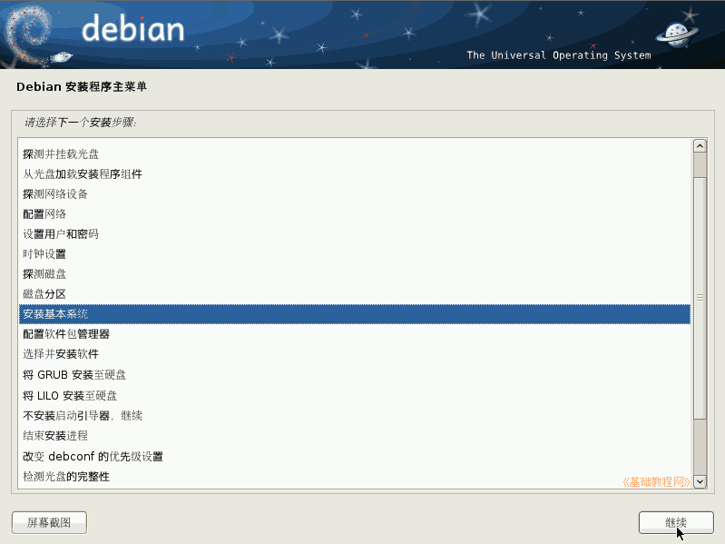
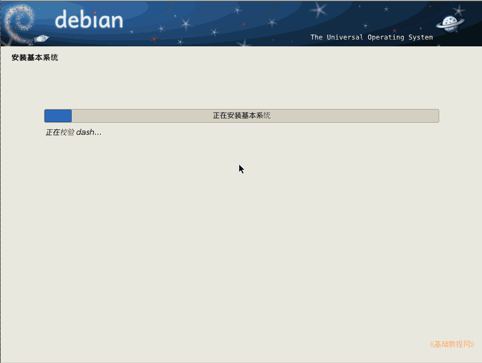
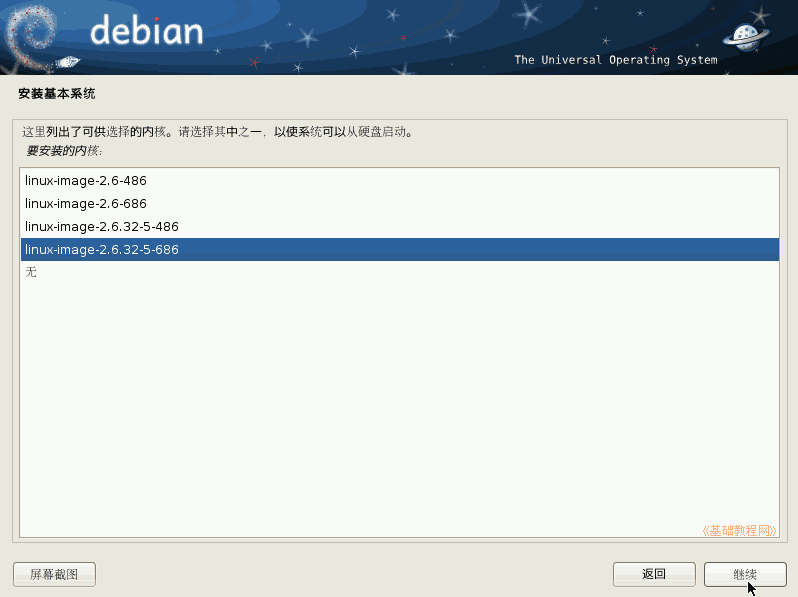
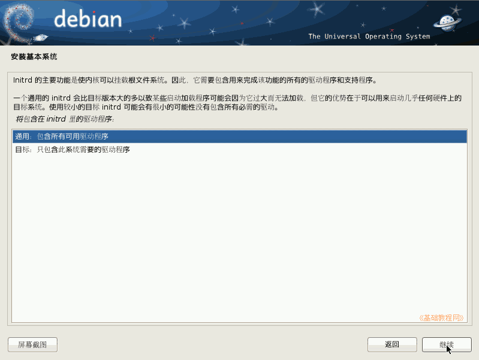

Debian 安装基础教程
作者：TeliuTe 来源：基础教程网
九、安装基本系统 返回目录 下一课基本系统用于启动计算机，进入到命令行操作的字符界面；
1、安装基本系统
1）在安装步骤面板点“继续”按钮；

2）接下来安装基本系统，这儿耐心等待即可；

3）在出来的选择内核面板中，选择版本高的内核，然后点“继续”按钮；

4）在选择 Initrd 面板中，选择通用的，点“继续”按钮；

本节学习了安装基本系统的基础知识，如果你成功地完成了练习，请继续学习下一课内容；
本教程由86团学校TeliuTe制作|著作权所有
基础教程网：http://teliute.laxjyj.com/
美丽的校园……
转载和引用本站内容，请保留版权信息和本站链接。